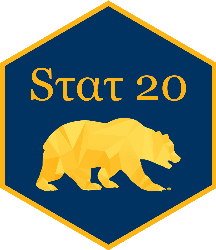

04:00
A Grammar of Graphics
STAT 20: Introduction to Probability and Statistics
Adapted by Gaston Sanchez
Agenda
- Announcements
- Concept Question
- Concept Activity
- Quiz Review
- Break
- Lab 2.2: Computing on the Data
Announcements
- Quiz 1 is not this upcoming Monday, but next Monday in-class. This Monday will be a workshop to complete Lab 2 and WS 4.
- Lab 2 (both parts) due Tuesday Feb 13 at 9am.
- WS-4 due Tuesday Feb 13 at 9am.
- Two problem sets without numbers relating to the Understanding the World with Data and A Grammar of Graphics will be posted to the resources tab on the home page of the course website. These are not for a grade and are for studying purposes.
- Quiz 1 on Monday, in class.
- Individual portion [25 minutes]
- Group (max. 3) portion [15 minutes]
- Please consult the Quiz Megathread and Syllabus for content and logistical questions.
Concept Question
What code was used to make the following plot?
Concept Activity
Concept Activity
You will be watching a 2.5 minute video of a presentation by a scientist, Hans Rosling, who studied global public health. He presents data visualizations depicting the change in life expectancy and family size over several decades in the 20th century.
On a piece of note paper:
- Sketch out the data frame used to create the graphic and add the names of the variables.
- List the aesthetic attributes used to encode the data in the graphic.
- Identify the geometry used in the plot.
Please turn to your neighbors and…
Discuss what you came up with in terms of . . .
- the variables present in the data frame
- the aesthetic attributes used to encode that data in the plot
- the geometry
What were the variables and aesthetic attributes?
Visual Cues / Aesthetics
- Location along the x-axis
- Location along the y-axis
- Size of point
- Color of point
- Animation
Variables
- Fertility rate
- Life expectancy
- Population
- Region
- Year
What did the data frame look like?
What was the unit of observation? What were the variables? What were their type?
Unit of observation
- A country in a given year
Variables
- Fertility rate (continuous)
- Life expectancy (continuous)
- Population (continuous)
- Region (nominal)
- Year (discrete)
What geometry is used to represent the observations?
- Points
Quiz Review
- Head to
pollev.comfor a series of former quiz questions and quiz-level questions! Make sure you take notes.
What type of claim was made?
01:00
What type of variable is listeners?
01:00
What type of proportion is used?

Roughly 68 percent of those passengers who were in the first class survived the wreckage of the Titanic.
01:00
What are the aesthetics and geometry of this plot?
01:00
What has not changed when moving from left to right?
Break
05:00
Lab 2.2: Flights
40:00
End of Lecture
